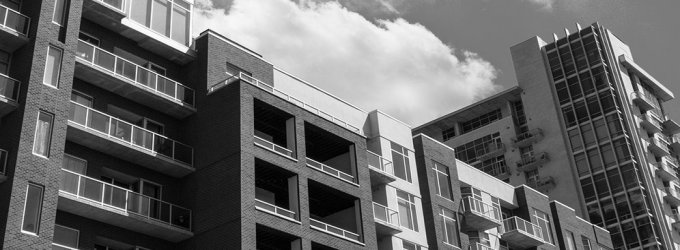

City Without Crime
Service Before Self

- 
SAFECITY is an information aggregation platform to help identify hotspots in a city where abuse has been reported. This platform only provides information based on voluntary unverified reports. This should not be taken as a substitute or replacement for the law enforcement process. This will only be successful if people come out and pin the creeps who are harassing us on the roads

SAFECITY is a project that helps to identify locations where women have experienced or witnessed any type of sexual harassment – verbal comments, graphic behavior, menace… anything. By starting this project we wish to highlight a serious social issue and we believe we are taking a step towards changing the way our society thinks and reacts. In time we hope it will lead to a safe and non-violent environment for all.
We propose that we PIN THE CREEPS! aWe all share our little experiences; upload our horrid stories, the photographs or the videos and most importantly the location where it happened. "We strongly believe that all women have the right to live safely, irrespective of which city they stay in. We also believe that a woman should be able to move around without fear or distress; without having to calculate which road she has to travel on so that she will be safe; without having to worry about the clothes she wears or the people she is with.
-->CLICK HERE FOR HOME PAGE